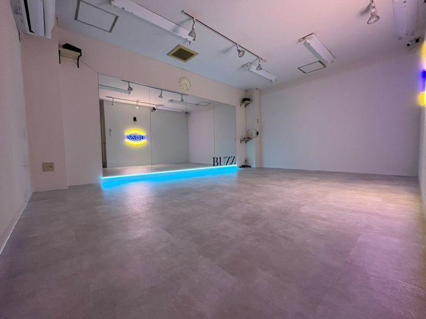
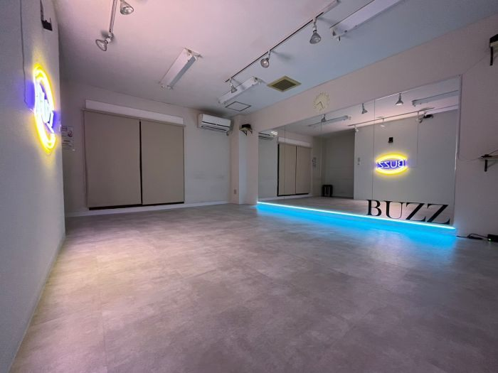

北千住周辺のレンタルスタジオ候補（近隣エリアも含む）
最終更新:
北千住周辺でダンス練習場所を探している方へ。同じエリアでも最寄り駅によって使いやすさがかなり変わるので、駅からの距離・Google口コミ評価・設備をもとにまとめました🎬
個人練習・グループ練習・振付確認など、目的に合わせて比較しやすいよう整理しています。提携スタジオはダンススタジオラボ（DSL）からオンライン予約もできます💪
スタジオ比較表
| スタジオ名 | 最寄り駅 | 徒歩 | Google評価 | 口コミ数 | 施設タイプ | 個人練習 | グループ練習 | 詳細 |
|---|---|---|---|---|---|---|---|---|
| BUZZ レンタルスタジオ | 竹ノ塚駅 | 徒歩4分 | 3.5 | 4 | 要確認 | ○ | ○ | 空き状況 |
| レンタルスタジオ Gスクエア | 北千住駅 | 徒歩11分 | 4.3 | 6 | 多目的レンタル | ○ | ○ | 公式サイト |
| Dance Studio Broomstick | 扇大橋駅 | 徒歩1分 | — | — | ダンス主用途 | ○ | ○ | 公式サイト |
| キッズダンススタジオSerenita西新井 | 西新井駅 | 徒歩3分 | — | — | ダンス主用途 | ○ | ○ | 詳細 |
| Studio Sun-Sea | 堀切菖蒲園駅 | 徒歩2分 | — | — | 要確認 | ○ | 公式サイトで確認 | 公式サイト |
| Brilliant Me Dance Studio 鹿浜 | 西新井大師西駅 | 徒歩8分 | — | — | ダンス主用途 | ○ | ○ | 公式サイト |
1. BUZZ レンタルスタジオ
要確認

| 住所 | 〒121-0823 東京都足立区伊興３丁目１８-１９ ＮＹビル 3階 地図 |
|---|---|
| アクセス | 竹ノ塚駅 徒歩4分 |
| 営業時間 | 毎日 24時間営業 |
BUZZ竹ノ塚は、北千住エリアの手頃な価格帯のダンススタジオです。窓から自然光が入る明るい空間が特徴で、多くのダンススタジオが地下やスタジオにはない開放感を備えています。
リーズナブルな料金設定により、地元でダンス練習の場を探している方に選ばれています。
🎬 ダンススタジオラボで予約できます✨ 空き状況がオンラインで確認できるのが便利ですよね！
2. レンタルスタジオ Gスクエア
多目的レンタル| 住所 | 〒120-0036 東京都足立区千住仲町１-２ 地図 |
|---|---|
| アクセス | 北千住駅 徒歩11分 |
| 営業時間 | 月: 定休日 / 火〜日: 11:00〜18:00 |
| 電話番号 | 03-3870-7566 |
| 公式サイト | 公式サイト |
レンタルスタジオ Gスクエアは、北千住駅から徒歩11分の好立地にある広々としたスタジオです。ダンスレッスンや練習、イベント開催など幅広く利用でき、親切で親身なオーナーのサポートが魅力となっています！
リーズナブルな料金で質の高い環境が整っているため、ダンス練習で経験者まで安心して利用できます。
🎬 設備が充実してそうですね💪 ダンス利用の可否は公式サイトで確認してから予約を🙏
3. Dance Studio Broomstick
ダンス主用途| 住所 | 〒123-0873 東京都足立区扇２丁目２５-１ 扇橋会館 ８F 地図 |
|---|---|
| アクセス | 扇大橋駅 徒歩1分 |
| 営業時間 | 月: 18:30〜21:20 / 火: 定休日 / 水: 18:30〜21:20 / 木: 16:30〜21:20 / 金: 17:30〜21:00 / 土: 13:00〜17:45 / 日: 9:30〜12:45 |
| 電話番号 | 03-3890-4822 |
| 公式サイト | 公式サイト |
最寄りの扇大橋駅から徒歩1分でアクセスできます。ダンス利用を想定したレンタルスタジオです。
鏡・床材ともに練習用途に対応しており、空き時間を使ってコンパクトに練習できる場所です。空き状況や設備の詳細は公式サイトでご確認ください。
🎬 ダンス向けに設計されてるスタジオは安心感が違います🪩 設備の詳細は公式サイトでチェックを！
4. キッズダンススタジオSerenita西新井
ダンス主用途| 住所 | 〒123-0842 東京都足立区栗原１丁目７-２０ 3階 地図 |
|---|---|
| アクセス | 西新井駅 徒歩3分 |
| 営業時間 | 毎日 9:00〜21:00 |
| 電話番号 | 050-3555-0206 |
西新井駅から徒歩3分に位置するスタジオです。ダンス利用を想定したレンタルスタジオです。
鏡・床材ともに練習用途に対応しており、空き時間を使ってコンパクトに練習できる場所です。空き状況や設備の詳細は公式サイトでご確認ください。
🎬 ダンス専用スタジオとして使いやすそうですね✨ 鏡の大きさと床材を確認してから予約するとベターです💡
5. Studio Sun-Sea
要確認| 住所 | 〒124-0006 東京都葛飾区堀切４丁目１１-２ 堀学ビル 302号室 地図 |
|---|---|
| アクセス | 堀切菖蒲園駅 徒歩2分 |
| 営業時間 | 毎日 8:00〜23:00 |
| 公式サイト | 公式サイト |
堀切菖蒲園駅から徒歩2分に位置するスタジオです。施設詳細は公式サイトをご確認ください。
床材・鏡の有無・広さなど、ダンス練習の用途に合うかどうか事前に確認しておくと安心です！ダンス利用の適否は、床材・鏡・広さを事前に公式サイトで確認してください。
🎬 詳細が気になりますね👀 公式サイトで鏡・床材・広さをチェックしてから判断してみてください！
6. Brilliant Me Dance Studio 鹿浜
ダンス主用途| 住所 | 〒123-0864 東京都足立区鹿浜７丁目１２-４ 地図 |
|---|---|
| アクセス | 西新井大師西駅 徒歩8分 |
| 営業時間 | 月: 17:00〜20:30 / 火〜土: 16:00〜21:00 / 日: 定休日 |
| 電話番号 | 03-3857-6111 |
| 公式サイト | 公式サイト |
西新井大師西駅から徒歩8分に位置するスタジオです。ダンスに特化したレンタルスタジオで、鏡での動作確認がしやすい環境が整っています。
自主練習や仲間との合わせ練習など、さまざまな用途に対応しています。設備や予約条件は公式サイトで確認しておくと安心です。
🎬 ダンス専用スタジオとして使いやすそうですね✨ 鏡の大きさと床材を確認してから予約するとベターです💡
北千住でレンタルダンススタジオを選ぶポイント
- 駅からの距離：練習後の移動も考えると、駅から徒歩5分以内が使いやすいです。最寄り駅ごとにスタジオ数が変わるため、集合しやすい駅を基準に選ぶのがおすすめです。
- 床材の確認：ダンス練習にはフローリングやリノリウム床が向いています。カーペット床はターンやスライドに不向きな場合があるため、予約前に確認しておきましょう。
- 鏡の有無・サイズ：振付確認には全身が映る大きな鏡が便利です。鏡の枚数や配置は公式サイトの写真で事前に確認できることが多いです。
- 部屋の広さ：個人練習なら10〜20㎡程度、グループ練習には30㎡以上が目安です。人数に合わせた広さを確認しておきましょう。
- 音響設備：Bluetooth対応スピーカーや音楽再生環境が整っているか確認しましょう。持ち込み可否についても確認しておくと安心です。
- 予約のしやすさ：オンライン予約・直前予約への対応、キャンセルポリシーも事前に確認しておくと利用しやすくなります。
エリア・駅別の特徴
| エリア（駅） | 特徴 |
|---|---|
| 竹ノ塚駅周辺 | 掲載1スタジオ。個人・独立系スタジオのみ。最短295mと駅直近。平均★3.5。DSL提携1スタジオあり。 |
| 北千住駅周辺 | 掲載1スタジオ。個人・独立系スタジオのみ。平均855mほど。平均★4.3。 |
| 扇大橋駅周辺 | 掲載1スタジオ。個人・独立系スタジオのみ。最短59mと駅直近。 |
| 西新井駅周辺 | 掲載1スタジオ。個人・独立系スタジオのみ。最短228mと駅直近。 |
| 堀切菖蒲園駅周辺 | 掲載1スタジオ。個人・独立系スタジオのみ。最短89mと駅直近。 |
| 西新井大師西駅周辺 | 掲載1スタジオ。個人・独立系スタジオのみ。平均571mほど。 |
個人練習・グループ練習で確認すべき設備
個人練習の場合
- 全身が映る鏡（フォームや振付を確認できるサイズ）
- 音楽再生環境（スピーカー・Bluetooth接続など）
- 1時間単位で予約できる柔軟な料金体系
- 荷物を置けるスペースや更衣室の有無
グループ練習の場合
- 4〜10人が動ける広さ（30㎡以上が目安）
- フォーメーション確認しやすい鏡の配置
- スピーカーの音量が十分であること
- 複数時間まとめて予約できる料金プランの有無
- 着替えスペース・荷物置き場の確保
よくある質問
まとめ
北千住エリアには、BUZZ レンタルスタジオ、レンタルスタジオ Gスクエア、Dance Studio Broomstickなどのレンタルダンススタジオがあります。いずれも駅から近い立地にあり、個人練習・グループ練習・振付確認など幅広い用途に使えます。
気になるスタジオがあれば、空き状況や設備条件を確認しながら練習スタイルに合う場所を選んでみてください💪 鏡の有無・床の種類・部屋の広さなど、用途に合わせた条件で比較するのが選びやすいですよ！
— ヤジー （株式会社リズム 代表）🎬
この記事について
この記事はヤジー（株式会社リズム 代表取締役・27歳）が執筆・監修しています。ダンス動画の撮影・編集を日本中で手がけており、スタジオ選びに関する実体験をもとに情報をシェアしています🎬
- 掲載スタジオはGoogle口コミ評価・駅からの距離・ダンス利用実績をもとに選定しています。
- 営業時間・電話番号は公式情報をもとに記載していますが変更されることがあります。最新情報は公式サイトをご確認ください。
- DSL提携スタジオはオンライン即時予約が可能です。